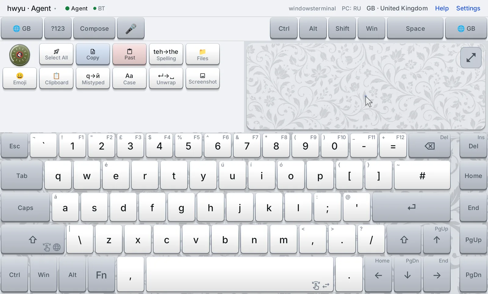
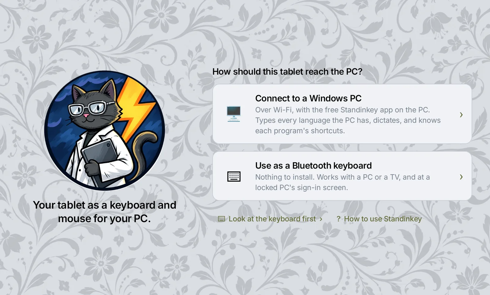
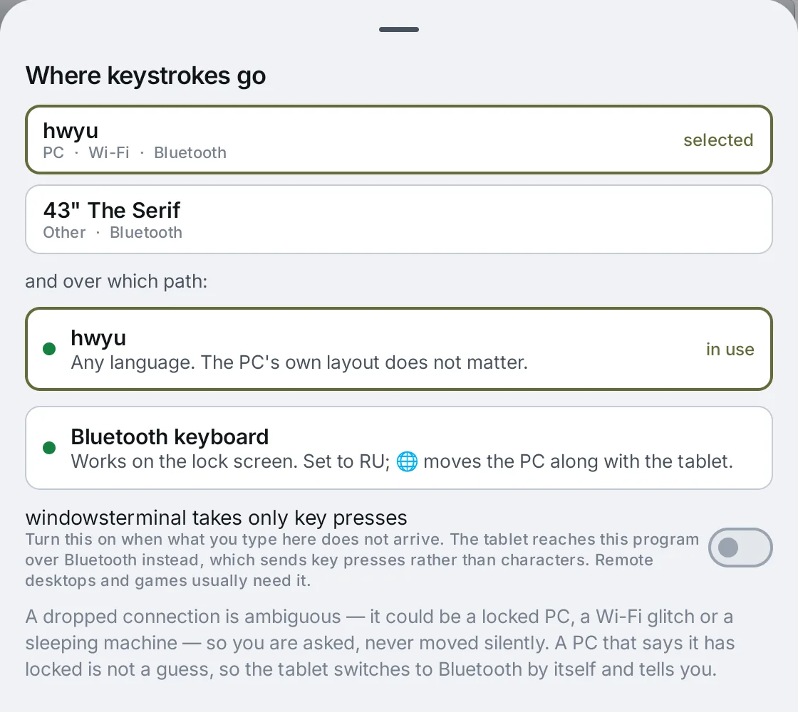
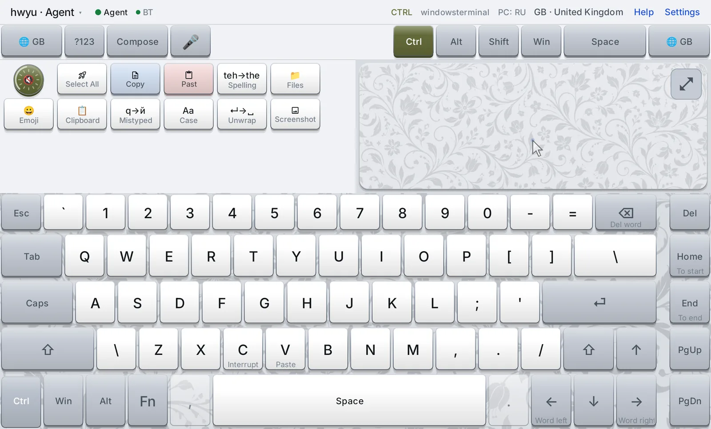
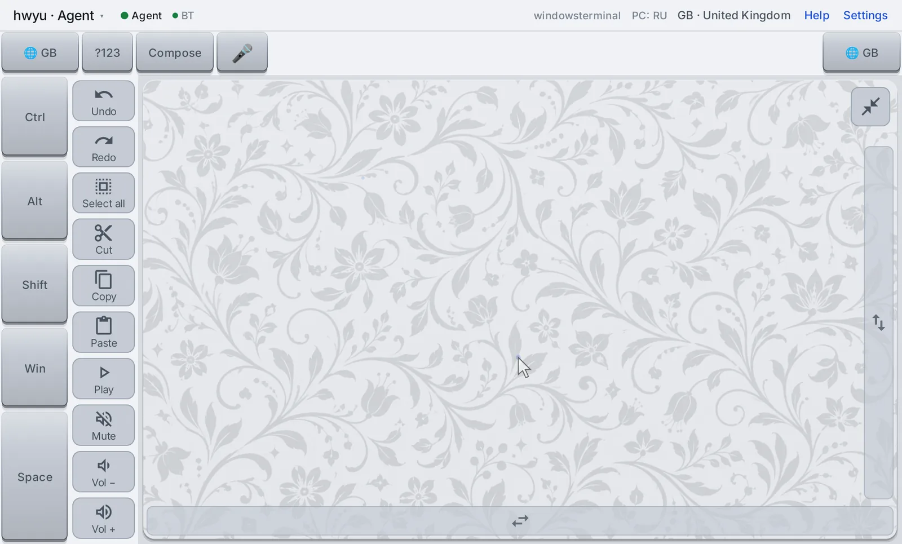

Standinkey
Your Android tablet as a keyboard, mouse pad and microphone for your Windows PC.
Standinkey turns a tablet into the keyboard and mouse of the PC in front of you. Every key shows the character that PC will actually type, in whatever language it is on. The keys show what each shortcut does in the program you are using. You can dictate, and the PC itself does the listening, with no cloud service. It reaches the PC two ways at once, over your Wi-Fi and as a Bluetooth keyboard, which is why it still types where remote keyboards usually give up: the Windows sign-in screen, an administrator prompt, or a password box.

Two programs, one keyboard
Standinkey for Android
The keyboard itself, the mouse pad and the microphone. It draws its own keys instead of using Android's keyboard, because the whole point is to control what each key says.
Standinkey for Windows
A small program in the notification area, the agent. The tablet talks to it over your Wi-Fi. It types what the tablet sends, and it tells the tablet what the PC is doing. Free from the Microsoft Store.
The Windows program is optional. Without it the tablet is still an ordinary Bluetooth keyboard and mouse for a PC, a TV, or anything else that takes one. With it, the tablet becomes far more, and the rest of this page explains what changes.

Wi-Fi and Bluetooth, together
The two connections are different in kind, not only in transport, and that difference shapes everything else.
Over Wi-Fi, the tablet sends characters
Tap я and the agent puts я into the PC directly, as a Unicode character. The PC's keyboard language plays no part, so the tablet can be on Russian while the PC sits on English and the text still comes out right. Cyrillic and Latin can share one sentence with no switching anywhere, and accents and emoji arrive as themselves. The agent also talks back: which program is in front, which language the PC is on, Caps Lock, whether the PC is locked, whether the speakers are muted.
Over Bluetooth, the tablet sends key positions
To the PC, the tablet is just a keyboard: it presses "the key third from the left in the top row", and Windows decides what that key means from its current language. Nothing has to be installed, and Windows accepts it everywhere a physical keyboard works, including the sign-in screen. The price is that the tablet has to know which language the PC is on, and Bluetooth gives nothing back except the Caps Lock light.

Why both beats either one
Each path fails exactly where the other one works. Standinkey keeps both connected all the time. Wi-Fi carries normal use, and Bluetooth stands by, already paired and connected, for the moments Wi-Fi cannot reach.
Wi-Fi alone
Comfortable until the moment it matters:
- Nothing reaches the sign-in screen once the PC locks
- Nothing reaches an administrator prompt or a Windows Security password box
- Nothing reaches a window running as administrator
- Remote desktops, virtual machines and many games discard its characters
- Works only where the agent is installed and running
Bluetooth alone
Reaches everything, but blind:
- The tablet must guess the PC's language; if it guesses wrong, every letter is wrong
- No shortcut names, no dictation, no text repair
- No volume or media keys, no absolute pointing
- Knows nothing about the PC: not the program in front, nor whether it is locked
- Only the languages the tablet has been told about
Both together
Each one covers the other's gaps:
- Wi-Fi does the typing; Bluetooth is already connected when it is needed
- The agent says when to switch: on lock, on a protected prompt, on an admin window
- The agent teaches Bluetooth the PC's real layouts, so it types every key right
- The agent corrects Bluetooth's language guess whenever Wi-Fi is up
- The switch takes a fraction of a second, and the tablet shows which path is in use
Why "already connected" matters. Windows sends no warning before it locks. The agent only hears about the lock after it has happened, and from that instant its typing silently goes nowhere. Pairing and connecting Bluetooth then would take seconds, and you would be typing a password into nothing. Because the Bluetooth link is already up, the switch is just a flag flipped on the tablet, in roughly 50 to 200 ms. At most the one key in flight is lost.
| What you want to do | Wi-Fi | Bluetooth |
|---|---|---|
| Type into ordinary programs | yes | yes |
| Type any language regardless of the PC's setting | yes | as set on the PC |
| Mixed scripts, accents, emoji in one go | yes | no |
| Windows sign-in screen, administrator prompts | no | yes |
| Windows Security password boxes, admin windows | no | yes |
| Remote desktop, VNC, virtual machines, raw-input games | no | yes |
| A TV or any device with no agent | no | yes |
| Mouse: move, click, drag, scroll, zoom | yes | yes |
| Absolute pointing (pad maps to the whole screen) | yes | no |
| Volume, mute, play/pause | yes | no |
| Shortcut names for the program in front | yes | no |
| Dictation, text repair, starting programs | yes | no |
| Caps Lock shown on the tablet | yes | yes, from the LED |
| Key scripts | yes | yes, except starting programs |
A keyboard that matches the PC
The keys are not drawn from a list the app ships with. The agent reads every keyboard layout installed on the PC: what each key types at each of six shift levels, with dead keys marked. The tablet then builds a board for each of them. Russian comes out as ЙЦУКЕН because the PC put й on the Q key, not because the app has heard of Russian. German has its ä, ö and ü where a German keyboard has them. The 🌐 key steps through exactly the languages that PC has, and the board follows when the PC switches language by itself.
Around that sits what phone keyboards got right:
- Hold a key for its alternates: accents, what the PC puts on AltGr, the F-key on a digit. Slide to one and let go.
- Slide along Space to move the cursor; with Shift held, the slide selects.
- Modifiers: hold one while you tap a key for a chord, tap once to latch it for the next key, double-tap to lock it. A double tap on Shift asks the PC for Caps Lock.
- Slide on the left Shift to preview another language: the whole board turns into it, and letting go there switches.
- Fn turns the digits into F1–F12 and the arrows into Home, End, PgUp and PgDn. ?123 opens a numpad with every symbol the board has no room for.
- Compose opens a text field on the tablet with Android's own autocorrect and swipe typing. What you write there goes to the PC in one piece when you send it.
Shortcuts with names

Hold Ctrl, Alt or Win and the board becomes a map of shortcuts. Each letter shows the Latin key it will press, because shortcuts are made of positions: Ctrl+C is the same key whether the PC is on English or on Russian, where that key types с. Under each one is what that shortcut does in the program in front, in the tablet's language: Copy, New tab, DevTools. The names follow the program, so a terminal says Interrupt where an editor says Copy, and Photoshop does not claim Ctrl+← moves by a word, because there it does not. Programs the catalogue doesn't know get Windows' usual meanings. Keys that have no position to press, such as the numpad's symbols, fade while a modifier is down.
The mouse pad

The pad is not an imitation of a laptop touchpad. It is a large surface whose gestures mean mouse actions on the pointer Windows already has.
| Gesture | What it does |
|---|---|
| One finger: move · tap · hold still, then move | Move the pointer · left click · drag |
| Two fingers: slide · flick · pinch · tap | Scroll, any direction · scroll that keeps going · zoom · right click |
| Three fingers: tap · hold still, then move | Middle click · right drag |
| Four fingers swipe left or right | Back · forward |
| Hold Shift, Ctrl or Space on the edge, then drag | Select · add to a selection · pan in Photoshop |
A gesture counts the most fingers it ever had, so a stray extra finger costs nothing. Three fingers sweeping together do nothing on purpose: on many tablets that sweep takes a screenshot. On the full-size pad, the strips along the side and bottom edges scroll with one finger.
Expanded, the pad has a column of buttons that changes with what is in front:
- in a browser: back, forward, the tabs, and "open in new tab" or "in a new window" (press it, then tap the link);
- on a video site or in a player: play, seek, full screen and the sound;
- in File Explorer: back, forward and the folder above;
- on the desktop or taskbar: task view, the last window, Explorer, search, notifications and Settings;
- anywhere else: undo, redo, select all, cut, copy, paste and the sound.
After a right click, the menu's own keys take the column for a few seconds: up, down, into a submenu and pick.
Collapsed, the small pad rests for half a second after each key. It dims and ignores touches, so a palm or a thumb landing on it mid-sentence does not click somewhere else in your document.
Buttons and scripts
Beside the small pad is a tray, like the row a laptop keeps above its digits:
- a volume knob: turn it to change the volume, tap it to mute;
- buttons for media, screenshot, lock, emoji and the clipboard history;
- the text repairs;
- your own scripts.
The two mute buttons show the PC's real state, read from Windows, rather than only toggling. When nobody can know the state, over Bluetooth for example, they say so instead of pretending.
A script is a few lines the tablet plays into the PC:
choose Server: web | db | cache
Ctrl+Alt+T
type ssh {Server}.example.com
EnterThe editor builds scripts from chips, and ⏺ Record writes down what you do. The language is small on purpose:
- keys, text, waits, clicks and scrolls, and starting a program;
- questions that stop and wait for you;
- no coordinates, because a click at a fixed point is how recorded macros rot.
A script stops within one step when you press Stop.
The typed line
Glass has no feel, so while you type your eyes are on the tablet, not on the PC's screen, and a typo stays unnoticed until you look up. A strip over the foot of the tray, just above the keys, shows what you just typed into the PC, with the cursor. You can check a word without looking away from the keys.
What it follows
| Key | On the strip |
|---|---|
| Letters, digits, symbols, Space, Enter, Tab | Inserted at the cursor; the newest one is in colour |
| ← → | The cursor moves one character |
| Ctrl+← Ctrl+→ | The cursor jumps a word, the way Windows text boxes do |
| Shift with any of those, or a slide along Space with Shift | A selection grows, shaded; an arrow without Shift lands on its edge |
| ⌫ Del, also with Ctrl for a whole word | Characters disappear; with a selection, the selection does |
| Home End | The cursor goes to the start or end of the line, if the line break is on the strip |
| Ctrl+C, Esc, Caps Lock, volume and media keys | Nothing changes: they leave the text alone |
It shows the few dozen characters around the cursor, as many as fit. Like a text box, it scrolls only when the cursor nears an edge, so it stays still enough to read while you move around. Eight seconds after the last key it fades out, so the tray is never covered for longer than you type. It ignores touches: a finger on it lands on the tray button underneath.
Why it sometimes empties
The strip is built from what the tablet sent. Nothing is read back from the PC: your text never travels from the PC to the tablet, and that is a privacy rule, not an omission. The price is that the tablet cannot see changes it did not make. So whenever the PC's text may have changed some other way, the strip starts again empty instead of showing something that may be wrong:
- a click or a drag on the mouse pad, which can put the cursor anywhere;
- another program or another window coming to the front (an editor marking the title as unsaved, like
Notepad's
*, still counts as the same window); - ↑ or ↓, PgUp or PgDn, and Ctrl+Home or End, which leave the line the strip knows;
- ← past the first character it saw, or Home or End with no line break on the strip to stop at, because the cursor has gone into text typed before;
- a paste, Ctrl+Z and other shortcuts, and any Alt or Win chord, because they belong to the program and the strip cannot know what they did;
- dictation, a text repair, or a spelling answer, which change the text on the PC itself;
- switching between Wi-Fi and Bluetooth, or reconnecting.
It fills again from the next key. An honestly short strip is better than one that is quietly wrong.
Where it shows, and where to switch it off
It works over both Wi-Fi and Bluetooth, because it records what was sent, whichever way it went. Over Bluetooth alone the PC tells the tablet nothing, so a window changed with the PC's own mouse or keyboard goes unnoticed until the next click from the tablet. It stays out of the way while the full-size pad, Compose or the spelling question is on screen. To turn it off: Settings → Typing → Show what is being typed.
Dictation
Tap 🎤 and talk. A level meter moves with your voice, and the words appear on the tablet as the PC hears them. Tap again, and what you said is typed into the PC with punctuation and capitals. The tablet only records. The PC recognises the speech, locally, with NVIDIA's Nemotron streaming model through sherpa-onnx: one model for English, Russian and Spanish, which detects the language itself. No audio leaves your network, and there is no account and no cloud service. The model, about 475 MB, downloads once, the first time you use it.
Repairing text
Select some text on the PC, or put the cursor after a word, and tap one button:
- Mistyped:
ghbdtn→привет, text typed in the wrong layout. The conversion uses the PC's own layout tables, so it is exact for whatever languages that PC has. - Case: cycles abc → Abc → ABC. Translit: Cyrillic ⇄ Latin.
- Unwrap: joins lines hard-wrapped by a PDF or an email, and keeps the paragraphs.
- Mojibake: repairs text decoded with the wrong encoding, like
Ïðèâåò, back intoПривет. - Spelling: fixes what Windows' dictionary is sure about. Where two real words both fit, it asks on the tablet, showing the sentence around the word.
A local language model ranks the candidates, but it can only pick from words the dictionary offers, so it never rewrites your sentence.
Several devices
The tablet keeps a list: PCs with the agent, TVs, anything that pairs with a Bluetooth keyboard. It types into one at a time, and choosing another in the header switches both connections over. A PC that reconnects by itself while the TV is chosen is politely disconnected again, since two hosts cannot share one keyboard. Each device keeps its own languages and settings. One PC can also have several tablets and phones paired.
The app speaks 24 languages. English, German, Spanish and Russian are built in. Twenty more come as free language packs, on the tablet and on the PC alike.
Edge cases, and how each is handled
Most of the work in a remote keyboard is in the situations where the easy design breaks. These are the ones Standinkey meets, and what it does about each. The tag names the path the case is about, or the one that comes to the rescue.
The PC locks, and you need to type your password Bluetooth
Once Windows locks, the sign-in screen runs on a separate, protected desktop that no program can type into. The agent's typing is not refused; Windows reports success and drops it. And Windows gives no warning beforehand: the agent learns about the lock only after it has happened.
So the agent tells the tablet the moment it learns, and the tablet moves to Bluetooth by itself. It says so at the top of the screen. Bluetooth was already connected, so nothing has to be set up. On unlock, the agent says so and typing returns to Wi-Fi.
An administrator prompt (UAC) appears Bluetooth
The "Do you want to allow this app…" prompt also runs on the protected desktop, but unlike the lock, it raises no event at all. The agent checks which desktop is receiving input, notices the switch and hands over to Bluetooth the same way, then hands back when the prompt closes.
A Windows Security password box ignores the typing Bluetooth
Some password prompts are the hardest case: a browser asking for your Windows password to show a saved password, or a credential request. They run on the ordinary desktop at ordinary privilege, so nothing above catches them. Yet Windows refuses typed-in input to them on purpose, because protecting passwords from programs that type is exactly their job. The agent recognises these windows and reports that its input "will not land here". The tablet then switches to Bluetooth, which Windows treats as a real keyboard.
A program running as administrator Bluetooth
Windows does not let an ordinary program type into a program running as administrator, and it does not even report an error. It just drops the input. The agent runs without administrator rights on purpose: it accepts keystrokes from the network, and giving it more power would widen what those keystrokes could reach. Instead it notices when the window in front is elevated and hands that window to Bluetooth.
Remote desktops, virtual machines and games Bluetooth
The Wi-Fi path types characters, and Windows delivers those as key events that carry a character but no key position. Programs that read the keyboard at a lower level throw them away: remote desktop and VNC clients, virtual machines, and games using raw input. Worse, nobody can tell. Windows reports success and the character dies inside the program.
Since the agent cannot detect this, the tablet asks you instead, once per program. In the paths sheet a switch reads "this program takes only key presses". Turn it on, and that program gets Bluetooth key presses from then on, on every PC, while everything else stays on Wi-Fi.
The connection drops, and nobody knows why Wi-Fi
From the tablet, three different situations look identical: the PC is locked, the Wi-Fi hiccuped, or the PC went to sleep. Switching paths on a hunch would bounce between them with every network glitch, and you would never know which one your next key went down.
So the tablet switches by itself only when the PC states a fact, such as "I locked" or "this window refuses me". A plain dropped connection is never resolved silently. The tablet asks, and shows both paths, because you can see your screen and it cannot. Meanwhile it keeps reconnecting, with backoff, and tries again the moment you wake the tablet or come back to the app.
Bluetooth types the wrong letters Bluetooth
Over Bluetooth the PC's language decides what each key types, and the tablet cannot see which one that is. It keeps a belief instead. 🌐 moves the tablet to the next language on your list and presses Windows' own switching hotkey the matching number of times. When the agent is connected, it quietly corrects the belief to what the PC really is. When the two disagree, the status line shows a warning such as PC: ES ⚠, and the paths sheet has one button per language to say where the PC actually is.
The layouts themselves come from the agent too. One PC in testing reported itself as US English
but had a Spanish physical layout. On it, nine of eleven punctuation keys typed something else:
; arrived as ñ. That is a password typed wrong at the sign-in screen with no
sign of it. Since then, Bluetooth types using the PC's real key maps, which the agent sends while
Wi-Fi is up. Four common layouts are built in for PCs without the agent.
Android quietly disconnects the Bluetooth keyboard Bluetooth
Android withdraws an app's Bluetooth keyboard as soon as the app counts as "in the background". That includes when the screen turns off, which is exactly when a PC tends to lock. Standinkey runs a foreground service, with its notification, so the keyboard stays registered. It re-registers if the system withdraws it anyway, and offers itself again to the last PC it had.
Keys sent too fast are lost Bluetooth
A PC whose Bluetooth is dozing in a power-saving mode drops reports that arrive faster than it wakes up. A human typing never notices, but a script or a language switch that presses several keys in a burst would lose some. So bursts go out paced, one at a time, on both paths.
Ctrl+C in a terminal Wi-Fi
Repairing text works by copying the selection. In a terminal, Ctrl+C does not copy. It stops whatever is running. So the text repairs refuse a terminal window before sending anything, rather than interrupting your build or your server. The shortcut names say the same thing on the key.
Volume and media keys over Bluetooth Bluetooth
The Bluetooth device Standinkey presents is a keyboard and a mouse, not a media remote, so a volume key sent that way would arrive as nothing at all. The tablet refuses them over Bluetooth and says why, instead of sending keys that silently vanish. Over Wi-Fi the agent handles them, and reports back whether the speakers and microphone are muted.
Reading the PC's layouts without disturbing your typing Wi-Fi
The Windows call that asks what a key types can, as a side effect, leave a half-finished accent waiting. Your next real keystroke would then come out accented. The agent uses the variant that leaves the keyboard state alone, checks before and after each read that nothing was left pending, and stops reading for the session if Windows ever ignores the request.
What it cannot do
BIOS menus, the boot menu and a BitLocker PIN come before Windows starts. An Android Bluetooth keyboard cannot reach them, and nothing here pretends it can. Gaming with low latency and anti-cheat systems are out of scope too.
And glass has no feel: you will always look at the keys. That is accepted, and it is the reason the keys must say exactly what they will type.
Privacy and security
- No account, no advertising, no analytics. Nothing is sent anywhere but between your tablet and your PC, on your own network.
- Pairing is deliberate. The PC shows a six-digit PIN that changes every few minutes, and a fingerprint to compare on the tablet. After that the connection is encrypted (TLS) and pinned to that PC's certificate. Anything that can talk to the agent can type into your PC, so nothing else can talk to it.
- No keylogger. The text repairs read only the selection, and only when you ask, using the same Ctrl+C you could have pressed. There is no keyboard hook and nothing is kept between requests. The repaired text never crosses the network: the agent reads it and writes it back itself.
- Speech stays on the PC. Dictation is recognised locally. So is the spelling model, which only reorders words the dictionary already offered.
- Unelevated by design. The agent runs as you, not as administrator. Bluetooth handles the windows it cannot reach.
- A paired tablet can type at the sign-in screen. That is the feature, and also the risk, so pair only tablets you trust. The privacy policy has the details.
Getting started
With the PC program (recommended)
- Install Standinkey on the PC from the Microsoft Store. A keyboard icon appears in the notification area.
- Right-click it and choose Pair a tablet…. It shows a PIN.
- On the tablet, choose Connect to a Windows PC. The PC is found on the network; enter the PIN and check the fingerprint.
- Turn on Act as a Bluetooth keyboard in the tablet's Settings → Connection, and pair the tablet once from Windows' Bluetooth settings. Now both paths are up.
Windows may ask once for network access, for TCP 8765 (the tablet's connection) and UDP 5353 (finding the PC automatically). If your home network is marked public, switch it to private. The tablet can also be pointed at the PC's address by hand.
Bluetooth only
- On the tablet, choose Use as a Bluetooth keyboard and switch it on.
- On the PC or TV, open its Bluetooth settings and pair the device called Standinkey.
Requirements: an Android tablet running Android 9 or later, used in landscape, and Windows 10 1809 or later on x64 for the PC program.
Support
Questions and problems: info@zenrepublic.es. The Help page inside the app (Help, top right) covers every control, in your language.